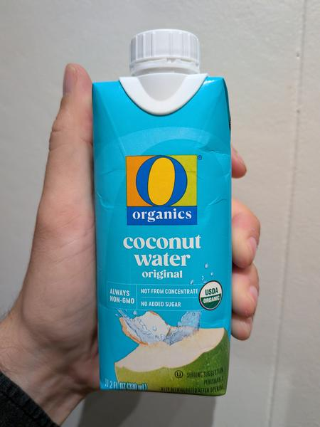

August 2025 · 11.2 fl oz (330 mL) · Still · Pasteurized · No Added Sugar · USDA Organic · Brazilian
No added sugar, Brazilian water. They do add some ascorbic acid, presumably as a preservative. And as the name suggests, this is an organic water.
I had moderate expectations for this — I figured this would be a better-than-average shelf stable option. Boy was I wrong. I’m not sure if it is the ascorbic acid or what but it tastes sour. I had to check the expiration date — I might still try another bottle to make sure this wasn’t a bad batch or something. I’ve had decent Brazilian waters before — it’s where Trader Joe’s sources their pasteurized offering from. But man — this tastes acrid and sharp and unpleasant.
These coconuts are grown in habitats threatened by palm oil deforestation. If you find this site useful, consider donating to the Rainforest Action Network.